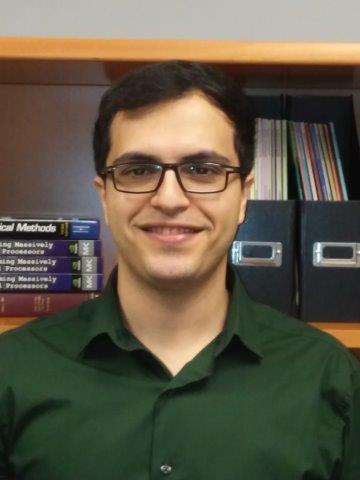

|  |
My name is Mohammad Sarraf Joshaghani, and I am currently a
Postdoctoral Research Associate and a Part-Time Lecturer in the Department of Computational and Applied Mathematics (CAAM)
at Rice University working under the supervision of Professor
Beatrice M. Riviere.
I obtained my PhD in Civil Engineering from the University of Houston and
was previously part of the Computational and Applied Mechanics Laboratory (CAML) research group under the supervision of Professor
Kalyana B. Nakshatrala.
My research interests include the following:
|